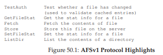
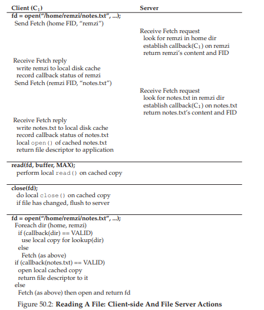
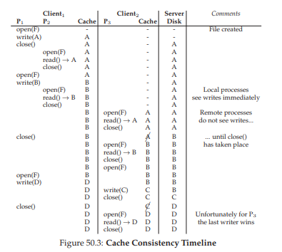
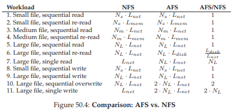

50. Hệ thống Tệp Andrew (Andrew File System – AFS)
Andrew File System được giới thiệu tại Carnegie-Mellon University (CMU)1 vào những năm 1980 [H+88]. Dưới sự dẫn dắt của Giáo sư nổi tiếng M. Satyanarayanan của CMU (thường được gọi tắt là “Satya”), mục tiêu chính của dự án này rất đơn giản: khả năng mở rộng (scale). Cụ thể, làm thế nào để thiết kế một distributed file system (hệ thống tệp phân tán) sao cho một server có thể hỗ trợ nhiều client nhất có thể?
Điều thú vị là có rất nhiều khía cạnh trong thiết kế và triển khai ảnh hưởng đến khả năng mở rộng. Quan trọng nhất là thiết kế giao thức giữa client và server.
Ví dụ, trong NFS, giao thức buộc client phải định kỳ kiểm tra với server để xác định xem nội dung trong cache có thay đổi hay không; vì mỗi lần kiểm tra đều tiêu tốn tài nguyên server (bao gồm CPU và băng thông mạng), các lần kiểm tra thường xuyên như vậy sẽ giới hạn số lượng client mà server có thể phục vụ, và do đó giới hạn khả năng mở rộng.
AFS cũng khác với NFS ở chỗ ngay từ đầu, hành vi hợp lý ở góc nhìn người dùng đã là một ưu tiên hàng đầu. Trong NFS, cache consistency (tính nhất quán của bộ nhớ đệm) rất khó mô tả vì nó phụ thuộc trực tiếp vào các chi tiết triển khai mức thấp, bao gồm cả thời gian timeout của cache phía client. Trong AFS, cache consistency đơn giản và dễ hiểu: khi file được mở, client sẽ nhận được bản sao mới nhất và nhất quán từ server.
Mặc dù ban đầu được gọi là “Carnegie-Mellon University”, sau này CMU bỏ dấu gạch nối, và từ đó có tên hiện đại “Carnegie Mellon University”. Vì AFS bắt nguồn từ công trình vào đầu những năm 80, chúng tôi sử dụng tên CMU ở dạng gốc có gạch nối đầy đủ. Xem thêm tại: https://www.quora.com/When-did-Carnegie-Mellon-University-remove-the-hyphen-in-the-university-name nếu bạn quan tâm đến chi tiết nhỏ này.
50.1 Phiên bản AFS 1 (AFS Version 1)
Chúng ta sẽ thảo luận về hai phiên bản của AFS [H+88, S+85]. Phiên bản đầu tiên (mà chúng ta sẽ gọi là AFSv1, nhưng thực tế hệ thống gốc được gọi là ITC distributed file system [S+85]) đã có một số thiết kế cơ bản, nhưng không mở rộng được như mong muốn, dẫn đến việc thiết kế lại và hình thành giao thức cuối cùng (mà chúng ta sẽ gọi là AFSv2, hoặc đơn giản là AFS) [H+88]. Sau đây là phần mô tả phiên bản đầu tiên.

Hình 50.1: Các điểm nổi bật của giao thức AFSv1
Một trong những nguyên tắc cơ bản của tất cả các phiên bản AFS là whole-file caching (bộ nhớ đệm toàn bộ file) trên local disk (đĩa cục bộ) của máy client đang truy cập file. Khi bạn gọi open() một file, toàn bộ file (nếu tồn tại) sẽ được lấy từ server và lưu thành một file trên đĩa cục bộ của bạn. Các thao tác read() và write() tiếp theo của ứng dụng sẽ được chuyển hướng tới local file system (hệ thống tệp cục bộ) nơi file được lưu; do đó, các thao tác này không cần giao tiếp mạng và rất nhanh. Cuối cùng, khi close(), file (nếu đã bị sửa đổi) sẽ được ghi trả lại server.
Lưu ý sự khác biệt rõ rệt với NFS, vốn cache theo block (không phải toàn bộ file, mặc dù NFS có thể cache tất cả các block của một file) và lưu trong bộ nhớ của client (không phải trên đĩa cục bộ).
Đi sâu hơn một chút:
- Khi một ứng dụng client lần đầu gọi
open(), mã phía client của AFS (mà các nhà thiết kế AFS gọi là Venus) sẽ gửi một thông điệp giao thứcFetchtới server. - Thông điệp
Fetchsẽ truyền toàn bộ pathname của file mong muốn (ví dụ:/home/remzi/notes.txt) tới file server (nhóm server này được gọi là Vice), server sẽ duyệt qua pathname, tìm file mong muốn và gửi toàn bộ file về cho client. - Mã phía client sau đó sẽ cache file này trên đĩa cục bộ của client (bằng cách ghi nó xuống local disk).
Như đã nói ở trên, các call read() và write() tiếp theo trong AFS hoàn toàn là local (không có giao tiếp với server); chúng chỉ được chuyển hướng tới bản sao cục bộ của file. Vì các call read() và write() hoạt động giống như trên một local file system, khi một block được truy cập, nó cũng có thể được cache trong bộ nhớ của client. Do đó, AFS cũng sử dụng bộ nhớ của client để cache các block mà nó đã lưu trên đĩa cục bộ.
Cuối cùng, khi hoàn tất, AFS client sẽ kiểm tra xem file có bị sửa đổi hay không (tức là nó đã được mở để ghi); nếu có, nó sẽ ghi phiên bản mới trở lại server bằng thông điệp giao thức Store, gửi toàn bộ file và pathname tới server để lưu trữ lâu dài.
Lần tiếp theo file được truy cập, AFSv1 thực hiện hiệu quả hơn nhiều:
- Mã phía client trước tiên liên hệ với server (sử dụng thông điệp giao thức
TestAuth) để xác định xem file có thay đổi hay không. - Nếu không, client sẽ sử dụng bản sao đã cache cục bộ, nhờ đó cải thiện hiệu năng bằng cách tránh truyền dữ liệu qua mạng.
Hình minh họa ở trên cho thấy một số thông điệp giao thức trong AFSv1. Lưu ý rằng phiên bản đầu tiên này chỉ cache nội dung file; ví dụ, các thư mục chỉ được lưu trên server.
TIP: ĐO LƯỜNG RỒI MỚI XÂY DỰNG (PATTERSON’S LAW)
Một trong những người cố vấn của chúng tôi, David Patterson (nổi tiếng với RISC và RAID), luôn khuyến khích chúng tôi đo lường hệ thống và chứng minh vấn đề trước khi xây dựng một hệ thống mới để khắc phục vấn đề đó.
Bằng cách sử dụng bằng chứng thực nghiệm thay vì chỉ dựa vào cảm tính, bạn có thể biến quá trình xây dựng hệ thống thành một nỗ lực khoa học hơn. Điều này còn có lợi ích phụ là buộc bạn phải suy nghĩ về cách đo lường hệ thống trước khi phiên bản cải tiến được phát triển.
Khi bạn bắt tay vào xây dựng hệ thống mới, sẽ có hai điều tốt hơn:
- Bạn có bằng chứng cho thấy mình đang giải quyết một vấn đề thực sự.
- Bạn đã có sẵn phương pháp đo lường để chứng minh rằng hệ thống mới thực sự cải thiện so với hiện trạng.
Và đó là lý do chúng tôi gọi đây là Patterson’s Law.
50.2 Các vấn đề với Phiên bản 1
Một vài vấn đề then chốt trong phiên bản đầu tiên của AFS đã thúc đẩy các nhà thiết kế phải suy nghĩ lại về hệ thống tệp của mình. Để nghiên cứu chi tiết các vấn đề này, nhóm thiết kế AFS đã dành rất nhiều thời gian đo đạc nguyên mẫu hiện có để tìm ra nguyên nhân. Việc thử nghiệm như vậy là một điều tốt, bởi vì đo lường là chìa khóa để hiểu cách hệ thống hoạt động và cách cải thiện chúng; thu thập dữ liệu cụ thể, chính xác là một phần cần thiết trong quá trình xây dựng hệ thống. Trong nghiên cứu của mình, các tác giả đã tìm ra hai vấn đề chính với AFSv1:
-
Chi phí duyệt đường dẫn (path-traversal) quá cao: Khi thực hiện một yêu cầu giao thức
FetchhoặcStore, client gửi toàn bộ pathname (ví dụ:/home/remzi/notes.txt) tới server. Để truy cập file, server phải thực hiện một quá trình duyệt toàn bộ đường dẫn, đầu tiên tìmhometrong thư mục gốc, sau đó tìmremzitronghome, và cứ thế cho đến khi tìm thấy file mong muốn. Khi có nhiều client truy cập server cùng lúc, các nhà thiết kế AFS nhận thấy server tiêu tốn phần lớn thời gian CPU chỉ để duyệt cây thư mục. -
Client gửi quá nhiều thông điệp giao thức
TestAuth: Tương tự như NFS với số lượng lớn thông điệpGETATTR, AFSv1 tạo ra một lượng lớn lưu lượng mạng để kiểm tra xem một file cục bộ (hoặc thông tinstatcủa nó) có hợp lệ hay không thông qua thông điệp giao thứcTestAuth. Do đó, server phải dành nhiều thời gian để trả lời client rằng chúng có thể sử dụng bản sao cache của file hay không. Phần lớn thời gian, câu trả lời là file không thay đổi.
Thực tế còn có hai vấn đề khác với AFSv1: tải (load) không được cân bằng giữa các server, và server sử dụng một process (tiến trình) riêng biệt cho mỗi client, dẫn đến context switching và các overhead khác. Vấn đề mất cân bằng tải được giải quyết bằng cách giới thiệu volume, cho phép quản trị viên di chuyển chúng giữa các server để cân bằng tải; vấn đề context-switch được giải quyết trong AFSv2 bằng cách xây dựng server sử dụng thread (luồng) thay vì process. Tuy nhiên, để tiết kiệm dung lượng, ở đây chúng ta tập trung vào hai vấn đề giao thức chính ở trên – những vấn đề đã giới hạn khả năng mở rộng của hệ thống.
50.3 Cải tiến giao thức (Improving the Protocol)
Hai vấn đề trên đã giới hạn khả năng mở rộng của AFS; CPU của server trở thành nút thắt cổ chai của hệ thống, và mỗi server chỉ có thể phục vụ khoảng 20 client trước khi bị quá tải. Server nhận quá nhiều thông điệp TestAuth, và khi nhận thông điệp Fetch hoặc Store, chúng tiêu tốn quá nhiều thời gian để duyệt cây thư mục. Do đó, các nhà thiết kế AFS phải đối mặt với một câu hỏi:
THE CRUX: LÀM THẾ NÀO ĐỂ THIẾT KẾ MỘT FILE PROTOCOL CÓ KHẢ NĂNG MỞ RỘNG
Làm thế nào để thiết kế lại giao thức nhằm giảm thiểu số lần tương tác với server, tức là làm sao để giảm số lượng thông điệpTestAuth? Hơn nữa, làm thế nào để thiết kế giao thức sao cho các tương tác với server trở nên hiệu quả? Bằng cách giải quyết cả hai vấn đề này, một giao thức mới sẽ tạo ra một phiên bản AFS có khả năng mở rộng tốt hơn nhiều.
50.4 Phiên bản AFS 2 (AFS Version 2)
AFSv2 giới thiệu khái niệm callback nhằm giảm số lượng tương tác giữa client và server. Callback đơn giản là một cam kết từ server tới client rằng server sẽ thông báo cho client khi một file mà client đang cache bị sửa đổi. Bằng cách thêm trạng thái này vào hệ thống, client không còn cần phải liên hệ với server để kiểm tra xem file trong cache có còn hợp lệ hay không. Thay vào đó, client giả định file vẫn hợp lệ cho đến khi server thông báo ngược lại; hãy chú ý sự tương đồng với mô hình polling (thăm dò) so với interrupts (ngắt).
AFSv2 cũng giới thiệu khái niệm file identifier (FID) (tương tự như NFS file handle) thay vì sử dụng pathname để chỉ định file mà client quan tâm. Một FID trong AFS bao gồm:
- Volume identifier (định danh volume)
- File identifier (định danh file)
- Uniquifier (giá trị duy nhất, cho phép tái sử dụng volume ID và file ID khi một file bị xóa)
Nhờ đó, thay vì gửi toàn bộ pathname tới server và để server duyệt đường dẫn để tìm file mong muốn, client sẽ tự duyệt pathname, từng thành phần một, cache kết quả và hy vọng giảm tải cho server.
Ví dụ:
Nếu một client truy cập file /home/remzi/notes.txt, và home là thư mục AFS được mount vào / (tức là / là thư mục gốc cục bộ, nhưng home và các thư mục con của nó nằm trong AFS), thì:
- Client sẽ
Fetchnội dung thư mụchome, lưu chúng vào local-disk cache (cache trên đĩa cục bộ), và thiết lập một callback trênhome. - Sau đó, client sẽ
Fetchthư mụcremzi, lưu vào local-disk cache, và thiết lập callback trênremzi. - Cuối cùng, client sẽ
Fetchfilenotes.txt, cache file thường này trên đĩa cục bộ, thiết lập callback, và trả về file descriptor cho ứng dụng gọi.
Xem Hình 50.2 để biết tóm tắt.

Hình 50.2: Đọc một file – Hoạt động của Client-side và File Server
Điểm khác biệt then chốt so với NFS là: với mỗi lần fetch một thư mục hoặc file, AFS client sẽ thiết lập một callback với server, đảm bảo rằng server sẽ thông báo cho client khi trạng thái cache của nó thay đổi.
Lợi ích là rõ ràng: mặc dù lần truy cập đầu tiên tới /home/remzi/notes.txt tạo ra nhiều thông điệp client–server (như mô tả ở trên), nó cũng thiết lập callback cho tất cả các thư mục cũng như file notes.txt. Do đó, các lần truy cập sau hoàn toàn là local và không cần tương tác với server.
Trong trường hợp phổ biến khi file đã được cache ở client, AFS hoạt động gần như giống hệt một local disk-based file system (hệ thống tệp dựa trên đĩa cục bộ). Nếu một file được truy cập nhiều hơn một lần, lần truy cập thứ hai sẽ nhanh như truy cập file cục bộ.
ASIDE: CACHE CONSISTENCY KHÔNG PHẢI LÀ “THUỐC CHỮA BÁCH BỆNH”
Khi thảo luận về distributed file system, người ta thường nói nhiều về cache consistency (tính nhất quán của bộ nhớ đệm) mà hệ thống tệp cung cấp. Tuy nhiên, mức độ nhất quán cơ bản này không giải quyết được mọi vấn đề liên quan đến truy cập file từ nhiều client.
Ví dụ: nếu bạn xây dựng một code repository (kho mã nguồn), với nhiều client thực hiện check-in và check-out mã, bạn không thể chỉ dựa vào hệ thống tệp bên dưới để xử lý tất cả; thay vào đó, bạn phải sử dụng file-level locking (khóa ở mức file) rõ ràng để đảm bảo “điều đúng đắn” xảy ra khi có truy cập đồng thời.
Thực tế, bất kỳ ứng dụng nào thực sự quan tâm đến cập nhật đồng thời sẽ bổ sung cơ chế xử lý xung đột riêng. Mức độ nhất quán cơ bản được mô tả trong chương này và chương trước chủ yếu hữu ích cho các tình huống sử dụng thông thường, ví dụ: khi người dùng đăng nhập vào một client khác, họ mong đợi một phiên bản hợp lý của file của mình xuất hiện ở đó. Mong đợi nhiều hơn từ các giao thức này sẽ chỉ dẫn đến thất bại, thất vọng và… bực bội tràn trề.
50.5 Tính nhất quán của bộ nhớ đệm (Cache Consistency)
Khi chúng ta thảo luận về NFS, có hai khía cạnh của cache consistency (tính nhất quán của bộ nhớ đệm) cần xem xét: update visibility (tính hiển thị của bản cập nhật) và cache staleness (tính lỗi thời của bộ nhớ đệm).
- Với update visibility, câu hỏi đặt ra là: Khi nào server sẽ được cập nhật với phiên bản mới của một file?
- Với cache staleness, câu hỏi là: Khi server đã có phiên bản mới, mất bao lâu để các client nhìn thấy phiên bản mới thay vì bản cũ trong cache?
Nhờ cơ chế callback và whole-file caching (cache toàn bộ file), tính nhất quán bộ nhớ đệm mà AFS cung cấp rất dễ mô tả và hiểu. Có hai trường hợp quan trọng cần xem xét:
- Tính nhất quán giữa các process trên các máy khác nhau
- Tính nhất quán giữa các process trên cùng một máy
Giữa các máy khác nhau, AFS làm cho bản cập nhật trở nên hiển thị trên server và vô hiệu hóa (invalidate) các bản sao cache cùng một lúc, đó là khi file được đóng.
- Một client mở file, sau đó ghi vào nó (có thể nhiều lần).
- Khi file được đóng, phiên bản mới được ghi (flush) lên server (và do đó trở nên hiển thị).
- Tại thời điểm này, server sẽ “phá vỡ” (break) các callback của mọi client đang giữ bản sao cache; việc phá vỡ này được thực hiện bằng cách liên hệ với từng client và thông báo rằng callback của file đó không còn hợp lệ.
Bước này đảm bảo rằng các client sẽ không đọc bản sao lỗi thời của file; các lần mở file tiếp theo trên các client đó sẽ yêu cầu fetch lại phiên bản mới từ server (và đồng thời thiết lập lại callback trên phiên bản mới).
AFS có một ngoại lệ cho mô hình đơn giản này khi xét giữa các process trên cùng một máy. Trong trường hợp này, các thao tác ghi vào file sẽ ngay lập tức hiển thị cho các process cục bộ khác (tức là một process không cần đợi đến khi file được đóng mới thấy các cập nhật mới nhất). Điều này làm cho việc sử dụng trên một máy duy nhất hoạt động đúng như mong đợi, vì hành vi này dựa trên UNIX semantics thông thường. Chỉ khi chuyển sang một máy khác, bạn mới nhận thấy cơ chế nhất quán tổng quát hơn của AFS.
Có một trường hợp cross-machine (giữa các máy) thú vị đáng bàn thêm:
- Trong trường hợp hiếm hoi khi các process trên các máy khác nhau đồng thời sửa đổi một file, AFS áp dụng cơ chế last writer wins (chính xác hơn là last closer wins).
- Cụ thể, client nào gọi
close()sau cùng sẽ cập nhật toàn bộ file trên server sau cùng và do đó trở thành “phiên bản thắng” – tức là file còn lại trên server để các client khác thấy. - Kết quả là file được tạo ra hoàn chỉnh bởi một trong hai client.
Lưu ý sự khác biệt so với giao thức dựa trên block như NFS:
- Trong NFS, các block riêng lẻ có thể được flush ra server khi mỗi client đang cập nhật file, và do đó file cuối cùng trên server có thể là sự pha trộn các cập nhật từ cả hai client.
- Trong nhiều trường hợp, một file bị trộn như vậy sẽ không hợp lý, ví dụ: một ảnh JPEG bị hai client chỉnh sửa từng phần; kết quả trộn các ghi này có thể không tạo thành một JPEG hợp lệ.

Hình 50.3: Dòng thời gian tính nhất quán bộ nhớ đệm (Cache Consistency Timeline)
Hình này minh họa một số kịch bản khác nhau. Các cột thể hiện hành vi của hai process (P1 và P2) trên Client1 và trạng thái cache của nó, một process (P3) trên Client2 và trạng thái cache của nó, và server (Server), tất cả cùng thao tác trên một file duy nhất tên là F.
Đối với server, hình chỉ hiển thị nội dung file sau khi thao tác ở cột bên trái hoàn tất. Hãy đọc và thử hiểu tại sao mỗi lần đọc lại trả về kết quả như vậy. Cột chú thích bên phải sẽ giúp bạn nếu gặp khó khăn.
50.6 Khôi phục sau crash (Crash Recovery)
Từ mô tả ở trên, bạn có thể nhận thấy rằng crash recovery (khôi phục sau crash) trong AFS phức tạp hơn NFS. Và điều đó là đúng.
Ví dụ:
- Giả sử có một khoảng thời gian ngắn khi server (S) không thể liên hệ với client (C1), chẳng hạn khi C1 đang khởi động lại.
- Trong lúc C1 không khả dụng, S có thể đã cố gửi cho nó một hoặc nhiều thông điệp callback recall; ví dụ: C1 có file F được cache trên đĩa cục bộ, và sau đó C2 (một client khác) cập nhật F, khiến S gửi thông điệp tới tất cả các client đang cache file này để xóa nó khỏi cache cục bộ.
- Vì C1 có thể bỏ lỡ các thông điệp quan trọng này khi đang khởi động lại, khi tham gia lại hệ thống, C1 nên coi toàn bộ nội dung cache của mình là không đáng tin cậy.
Do đó, khi truy cập file F lần tiếp theo, C1 nên:
- Gửi thông điệp
TestAuthtới server để hỏi xem bản cache của file F có còn hợp lệ không. - Nếu hợp lệ, C1 có thể sử dụng nó.
- Nếu không, C1 phải fetch phiên bản mới hơn từ server.
Khôi phục server sau crash cũng phức tạp hơn:
- Vấn đề là các callback được lưu trong bộ nhớ; do đó, khi server khởi động lại, nó không biết máy client nào đang giữ file nào.
- Vì vậy, khi server khởi động lại, mỗi client phải nhận ra rằng server đã crash và coi toàn bộ nội dung cache của mình là không đáng tin cậy, và (như trên) phải xác minh lại tính hợp lệ của file trước khi sử dụng.
Một server crash là một sự kiện lớn, vì cần đảm bảo rằng mọi client đều biết về crash kịp thời, nếu không sẽ có nguy cơ client truy cập file lỗi thời. Có nhiều cách để triển khai cơ chế khôi phục này, ví dụ:
- Server gửi thông điệp (“đừng tin nội dung cache của bạn!”) tới từng client khi nó hoạt động trở lại.
- Hoặc client định kỳ kiểm tra xem server có đang hoạt động không (bằng heartbeat message).
Như bạn thấy, việc xây dựng một mô hình cache hợp lý và có khả năng mở rộng hơn phải trả giá; với NFS, client hầu như không nhận thấy khi server crash.

Hình 50.4: So sánh AFS và NFS (Comparison: AFS vs. NFS)
50.7 Khả năng mở rộng và hiệu năng của AFSv2 (Scale And Performance Of AFSv2)
Với giao thức mới được áp dụng, AFSv2 đã được đo đạc và cho thấy khả năng mở rộng cao hơn nhiều so với phiên bản ban đầu. Thực tế, mỗi server có thể hỗ trợ khoảng 50 client (thay vì chỉ 20). Một lợi ích khác là hiệu năng phía client thường gần tương đương với hiệu năng cục bộ, vì trong trường hợp phổ biến, tất cả các truy cập file đều là local; các thao tác đọc file thường được lấy từ local disk cache (và có thể là từ bộ nhớ cục bộ). Chỉ khi client tạo một file mới hoặc ghi vào một file hiện có thì mới cần gửi thông điệp Store tới server để cập nhật nội dung mới của file.
Chúng ta cũng sẽ xem xét hiệu năng của AFS bằng cách so sánh các kịch bản truy cập hệ thống tệp phổ biến với NFS. Hình 50.4 (trang 9) cho thấy kết quả so sánh định tính này.
Trong hình, chúng ta phân tích các mẫu đọc và ghi điển hình cho các file có kích thước khác nhau:
- Small file: chứa Ns block
- Medium file: chứa Nm block
- Large file: chứa NL block
Giả định rằng small và medium file vừa với bộ nhớ của client; large file vừa với đĩa cục bộ nhưng không vừa với bộ nhớ client.
Chúng ta cũng giả định, để phân tích, rằng:
- Truy cập qua mạng tới server từ xa cho một block file mất Lnet đơn vị thời gian.
- Truy cập bộ nhớ cục bộ mất Lmem.
- Truy cập đĩa cục bộ mất Ldisk.
Giả định chung:
$$ L_{net} > L_{disk} > L_{mem} $$
Cuối cùng, giả định rằng lần truy cập đầu tiên tới một file không trúng cache nào. Các lần truy cập tiếp theo (“re-read”) sẽ trúng cache nếu cache liên quan đủ dung lượng để chứa file.
Các cột trong hình cho thấy thời gian một thao tác cụ thể (ví dụ: đọc tuần tự một small file) mất bao lâu trên NFS hoặc AFS. Cột ngoài cùng bên phải hiển thị tỉ lệ thời gian AFS/NFS.
Các quan sát chính:
-
Hiệu năng tương đương trong nhiều trường hợp
Ví dụ: khi đọc file lần đầu (Workload 1, 3, 5), thời gian lấy file từ server từ xa chiếm ưu thế và tương tự trên cả hai hệ thống.- Có thể bạn nghĩ AFS sẽ chậm hơn vì phải ghi file xuống đĩa cục bộ; tuy nhiên, các ghi này được buffer bởi cache của hệ thống tệp cục bộ phía client, nên chi phí này thường bị ẩn.
- Tương tự, bạn có thể nghĩ rằng đọc từ bản sao cache trên đĩa của AFS sẽ chậm hơn; nhưng AFS được hưởng lợi từ cache bộ nhớ của hệ thống tệp cục bộ, nên nhiều lần đọc sẽ trúng cache bộ nhớ và hiệu năng tương tự NFS.
-
Khác biệt khi re-read large file tuần tự (Workload 6)
- AFS có local disk cache lớn, nên khi file được truy cập lại, nó sẽ đọc từ đó.
- NFS chỉ cache block trong bộ nhớ client; nếu file lớn hơn bộ nhớ cục bộ, NFS phải tải lại toàn bộ file từ server.
- Do đó, AFS nhanh hơn NFS trong trường hợp này với hệ số $$ L_{net} / L_{disk} $$ (giả sử truy cập từ xa chậm hơn đĩa cục bộ).
- Ngoài ra, NFS còn làm tăng tải server, ảnh hưởng đến khả năng mở rộng.
-
Ghi tuần tự file mới (Workload 8, 9)
- AFS ghi file vào bản sao cache cục bộ; khi đóng file, client AFS sẽ gửi toàn bộ dữ liệu lên server.
- NFS buffer ghi trong bộ nhớ client, có thể gửi một số block lên server do áp lực bộ nhớ, nhưng chắc chắn sẽ ghi khi đóng file để đảm bảo flush-on-close consistency.
- Có thể nghĩ AFS chậm hơn vì ghi xuống đĩa cục bộ, nhưng thực tế ghi này được commit vào page cache trước, rồi mới ghi xuống đĩa nền, nên AFS vẫn hưởng lợi từ cơ chế cache bộ nhớ của hệ điều hành.
-
Ghi đè tuần tự file hiện có (Workload 10)
- Đây là trường hợp AFS kém hơn: client phải fetch toàn bộ file cũ trước, rồi mới ghi đè.
- NFS chỉ ghi đè block, tránh được việc đọc ban đầu không cần thiết2.
-
Truy cập một phần nhỏ dữ liệu trong large file (Workload 7, 11)
- NFS tốt hơn nhiều: AFS fetch toàn bộ file khi mở, dù chỉ đọc/ghi một phần nhỏ.
- Nếu file bị sửa đổi, AFS sẽ ghi lại toàn bộ file lên server, nhân đôi tác động hiệu năng.
- NFS, với giao thức dựa trên block, thực hiện I/O tỷ lệ thuận với kích thước thao tác.
Ở đây giả định NFS ghi theo kích thước block và căn chỉnh block; nếu không, NFS client cũng phải đọc block trước. Cũng giả định file không được mở với cờ O_TRUNC; nếu có, lần mở ban đầu trong AFS sẽ không fetch nội dung file sắp bị cắt.
ASIDE: TẦM QUAN TRỌNG CỦA WORKLOAD
Một thách thức khi đánh giá bất kỳ hệ thống nào là lựa chọn workload (tải công việc). Vì hệ thống máy tính được sử dụng theo nhiều cách khác nhau, có rất nhiều loại workload để lựa chọn. Nhà thiết kế hệ thống lưu trữ nên quyết định workload nào là quan trọng để đưa ra các quyết định thiết kế hợp lý.
Các nhà thiết kế AFS, dựa trên kinh nghiệm đo lường cách hệ thống tệp được sử dụng, đã đưa ra một số giả định: hầu hết file không được chia sẻ thường xuyên và được truy cập tuần tự toàn bộ. Với giả định này, thiết kế AFS là hoàn toàn hợp lý.
Tuy nhiên, giả định này không phải lúc nào cũng đúng. Ví dụ: một ứng dụng ghi nối thêm dữ liệu định kỳ vào log – các ghi nhỏ này vào một large file hiện có là vấn đề lớn với AFS. Nhiều workload khó khác cũng tồn tại, ví dụ: cập nhật ngẫu nhiên trong cơ sở dữ liệu giao dịch.
Một nguồn thông tin về các loại workload phổ biến là các nghiên cứu đã được thực hiện. Xem các nghiên cứu như [B+91, H+11, R+00, V99], bao gồm cả bản tổng kết AFS [H+88], để có ví dụ phân tích workload.
Tổng kết: NFS và AFS đưa ra các giả định khác nhau và do đó đạt được các kết quả hiệu năng khác nhau. Việc những khác biệt này có quan trọng hay không, như thường lệ, phụ thuộc vào workload.
50.8 AFS: Các cải tiến khác (Other Improvements)
Tương tự như khi Berkeley FFS được giới thiệu (bổ sung symbolic link và nhiều tính năng khác), các nhà thiết kế AFS đã tận dụng cơ hội khi xây dựng hệ thống để bổ sung một số tính năng giúp hệ thống dễ sử dụng và quản lý hơn.
Ví dụ: AFS cung cấp cho client một global namespace (không gian tên toàn cục) thực sự, đảm bảo rằng tất cả các file đều được đặt tên giống nhau trên mọi máy client.
Ngược lại, NFS cho phép mỗi client mount các NFS server theo bất kỳ cách nào họ muốn, và do đó chỉ bằng quy ước (và nỗ lực quản trị lớn) thì tên file mới có thể đồng nhất giữa các client.
AFS cũng coi trọng vấn đề bảo mật và tích hợp các cơ chế để xác thực người dùng (authenticate users) và đảm bảo rằng một tập hợp file có thể được giữ riêng tư nếu người dùng mong muốn.
Ngược lại, NFS trong nhiều năm chỉ hỗ trợ bảo mật ở mức rất sơ khai.
AFS còn bao gồm các công cụ cho phép user-managed access control (kiểm soát truy cập do người dùng quản lý) một cách linh hoạt. Khi sử dụng AFS, người dùng có quyền kiểm soát lớn đối với việc ai có thể truy cập file nào.
NFS, giống như hầu hết các hệ thống tệp UNIX, hỗ trợ rất hạn chế cho kiểu chia sẻ này.
Cuối cùng, như đã đề cập trước đó, AFS bổ sung các công cụ giúp quản trị viên hệ thống quản lý server dễ dàng hơn. Về tư duy quản trị hệ thống, AFS đã đi trước phần còn lại của lĩnh vực này rất xa.
50.9 Tóm tắt (Summary)
AFS cho chúng ta thấy rằng distributed file system (hệ thống tệp phân tán) có thể được xây dựng theo cách rất khác so với những gì ta thấy ở NFS.
Thiết kế giao thức của AFS đặc biệt quan trọng; bằng cách giảm thiểu tương tác với server (thông qua whole-file caching và callback), mỗi server có thể hỗ trợ nhiều client hơn và do đó giảm số lượng server cần thiết để quản lý một site nhất định.
Nhiều tính năng khác, bao gồm single namespace, bảo mật, và access-control list (danh sách kiểm soát truy cập), khiến AFS trở nên thân thiện khi sử dụng.
Mô hình nhất quán (consistency model) mà AFS cung cấp đơn giản, dễ hiểu và suy luận, đồng thời không dẫn đến những hành vi kỳ lạ thỉnh thoảng thấy ở NFS.
Có lẽ đáng tiếc là AFS đang trên đà suy giảm.
Vì NFS trở thành một open standard (tiêu chuẩn mở), nhiều nhà cung cấp đã hỗ trợ nó, và cùng với CIFS (giao thức hệ thống tệp phân tán dựa trên Windows), NFS thống trị thị trường.
Mặc dù đôi khi vẫn thấy các hệ thống AFS được triển khai (ví dụ tại một số tổ chức giáo dục, bao gồm Wisconsin), ảnh hưởng lâu dài có lẽ sẽ đến từ các ý tưởng của AFS hơn là chính hệ thống này.
Thực tế, NFSv4 hiện đã bổ sung server state (ví dụ: thông điệp giao thức “open”), và do đó ngày càng giống với giao thức cơ bản của AFS.